Web Server Statistics for transmarco1.webqom.com
Web Server Statistics for transmarco1.webqom.com
Program started on Thu, Oct 19 2017 at 8:21 PM.
Analyzed requests from Thu, Sep 28 2017 at 5:59 PM to Thu, Oct 19 2017 at 6:11 PM (21.01 days).
Web Server Statistics for transmarco1.webqom.comProgram started on Thu, Oct 19 2017 at 8:21 PM.
Analyzed requests from Thu, Sep 28 2017 at 5:59 PM to Thu, Oct 19 2017 at 6:11 PM (21.01 days).
(Go To: Top | General Summary | Monthly Report | Daily Summary | Hourly Summary | Domain Report | Organization Report | Redirected Referrer Report | Failed Referrer Report | Referring Site Report | Browser Report | Browser Summary | Operating System Report | Status Code Report | File Size Report | File Type Report | Directory Report | Request Report)
Figures in parentheses refer to the 7-day period ending Oct 19 2017 at 8:21 PM.
Successful requests: 5,660 (773)
Average successful requests per day: 269 (110)
Successful requests for pages: 55 (38)
Average successful requests for pages per day: 2 (5)
Failed requests: 2,361 (46)
Redirected requests: 279 (47)
Distinct files requested: 118 (72)
Distinct hosts served: 41 (4)
Data transferred: 130.37 megabytes (15.93 megabytes)
Average data transferred per day: 6.21 megabytes (2.28 megabytes)
(Go To: Top | General Summary | Monthly Report | Daily Summary | Hourly Summary | Domain Report | Organization Report | Redirected Referrer Report | Failed Referrer Report | Referring Site Report | Browser Report | Browser Summary | Operating System Report | Status Code Report | File Size Report | File Type Report | Directory Report | Request Report)
Each unit ( ) represents 1 request for a page.
) represents 1 request for a page.
| month | #reqs | #pages | |
|---|---|---|---|
| Sep 2017 | 1732 | 17 |  |
| Oct 2017 | 3928 | 38 |    |
Busiest month: Oct 2017 (38 requests for pages).
(Go To: Top | General Summary | Monthly Report | Daily Summary | Hourly Summary | Domain Report | Organization Report | Redirected Referrer Report | Failed Referrer Report | Referring Site Report | Browser Report | Browser Summary | Operating System Report | Status Code Report | File Size Report | File Type Report | Directory Report | Request Report)
Each unit () represents 1 request for a page.
| day | #reqs | #pages | |
|---|---|---|---|
| Sun | 342 | 0 | |
| Mon | 426 | 0 | |
| Tue | 1218 | 0 | |
| Wed | 844 | 38 | |
| Thu | 406 | 16 | |
| Fri | 1178 | 1 | |
| Sat | 1246 | 0 |
(Go To: Top | General Summary | Monthly Report | Daily Summary | Hourly Summary | Domain Report | Organization Report | Redirected Referrer Report | Failed Referrer Report | Referring Site Report | Browser Report | Browser Summary | Operating System Report | Status Code Report | File Size Report | File Type Report | Directory Report | Request Report)
Each unit () represents 1 request for a page.
| hour | #reqs | #pages | |
|---|---|---|---|
| 0 | 77 | 0 | |
| 1 | 197 | 1 | |
| 2 | 932 | 26 |  |
| 3 | 157 | 0 | |
| 4 | 112 | 0 | |
| 5 | 71 | 0 | |
| 6 | 48 | 0 | |
| 7 | 48 | 0 | |
| 8 | 95 | 0 | |
| 9 | 48 | 0 | |
| 10 | 48 | 0 | |
| 11 | 50 | 0 | |
| 12 | 212 | 0 | |
| 13 | 316 | 1 | |
| 14 | 281 | 9 | |
| 15 | 87 | 2 | |
| 16 | 134 | 0 | |
| 17 | 147 | 4 | |
| 18 | 429 | 6 | |
| 19 | 570 | 0 | |
| 20 | 611 | 6 | |
| 21 | 304 | 0 | |
| 22 | 465 | 0 | |
| 23 | 221 | 0 |
(Go To: Top | General Summary | Monthly Report | Daily Summary | Hourly Summary | Domain Report | Organization Report | Redirected Referrer Report | Failed Referrer Report | Referring Site Report | Browser Report | Browser Summary | Operating System Report | Status Code Report | File Size Report | File Type Report | Directory Report | Request Report)
Listing domains, sorted by the amount of traffic.
| #reqs | %bytes | domain |
|---|---|---|
| 5660 | 100% | [unresolved numerical addresses] |
(Go To: Top | General Summary | Monthly Report | Daily Summary | Hourly Summary | Domain Report | Organization Report | Redirected Referrer Report | Failed Referrer Report | Referring Site Report | Browser Report | Browser Summary | Operating System Report | Status Code Report | File Size Report | File Type Report | Directory Report | Request Report)
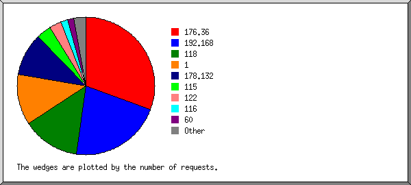
Listing the top 20 organizations by the number of requests, sorted by the number of requests.
| #reqs | %bytes | organization |
|---|---|---|
| 1736 | 27.06% | 176.36 |
| 1212 | 31.42% | 192.168 |
| 771 | 11.07% | 118 |
| 678 | 5.23% | 1 |
| 571 | 6.18% | 178.132 |
| 194 | 1.95% | 115 |
| 160 | 4.78% | 122 |
| 98 | 4.85% | 116 |
| 79 | 3.65% | 60 |
| 45 | 0.21% | 52 |
| 28 | 1.22% | 171.79 |
| 23 | 175.144 | |
| 23 | 1.21% | 88 |
| 22 | 1.05% | 185.137 |
| 4 | 0.01% | 104 |
| 2 | 0.06% | 159.203 |
| 2 | 13 | |
| 2 | 40 | |
| 2 | 23 | |
| 2 | 0.01% | 54 |
| 6 | 0.03% | [not listed: 4 organizations] |
(Go To: Top | General Summary | Monthly Report | Daily Summary | Hourly Summary | Domain Report | Organization Report | Redirected Referrer Report | Failed Referrer Report | Referring Site Report | Browser Report | Browser Summary | Operating System Report | Status Code Report | File Size Report | File Type Report | Directory Report | Request Report)
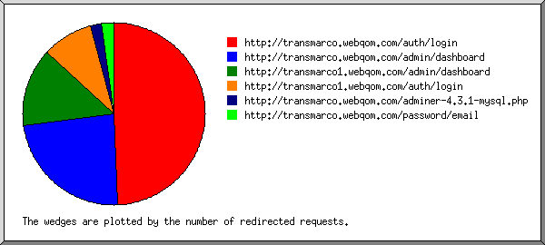
Listing referring URLs, sorted by the number of redirected requests.
(Go To: Top | General Summary | Monthly Report | Daily Summary | Hourly Summary | Domain Report | Organization Report | Redirected Referrer Report | Failed Referrer Report | Referring Site Report | Browser Report | Browser Summary | Operating System Report | Status Code Report | File Size Report | File Type Report | Directory Report | Request Report)
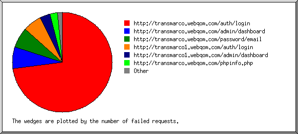
Listing referring URLs, sorted by the number of failed requests.
(Go To: Top | General Summary | Monthly Report | Daily Summary | Hourly Summary | Domain Report | Organization Report | Redirected Referrer Report | Failed Referrer Report | Referring Site Report | Browser Report | Browser Summary | Operating System Report | Status Code Report | File Size Report | File Type Report | Directory Report | Request Report)
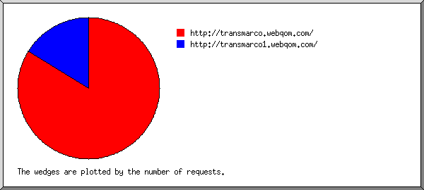
Listing referring sites, sorted by the number of requests.
| #reqs | site |
|---|---|
| 3419 | http://transmarco.webqom.com/ |
| 662 | http://transmarco1.webqom.com/ |
(Go To: Top | General Summary | Monthly Report | Daily Summary | Hourly Summary | Domain Report | Organization Report | Redirected Referrer Report | Failed Referrer Report | Referring Site Report | Browser Report | Browser Summary | Operating System Report | Status Code Report | File Size Report | File Type Report | Directory Report | Request Report)
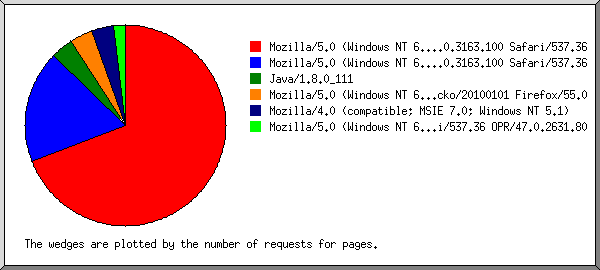
Listing browsers with at least 1 request for a page, sorted by the number of requests for pages.
| #reqs | #pages | browser |
|---|---|---|
| 428 | 38 | Mozilla/5.0 (Windows NT 6.1) AppleWebKit/537.36 (KHTML, like Gecko) Chrome/61.0.3163.100 Safari/537.36 |
| 1787 | 10 | Mozilla/5.0 (Windows NT 6.1; Win64; x64) AppleWebKit/537.36 (KHTML, like Gecko) Chrome/61.0.3163.100 Safari/537.36 |
| 21 | 2 | Java/1.8.0_111 |
| 687 | 2 | Mozilla/5.0 (Windows NT 6.1; rv:55.0) Gecko/20100101 Firefox/55.0 |
| 24 | 2 | Mozilla/4.0 (compatible; MSIE 7.0; Windows NT 5.1) |
| 24 | 1 | Mozilla/5.0 (Windows NT 6.1; Win64; x64) AppleWebKit/537.36 (KHTML, like Gecko) Chrome/60.0.3112.90 Safari/537.36 OPR/47.0.2631.80 |
| 2689 | 0 | [not listed: 13 browsers] |
(Go To: Top | General Summary | Monthly Report | Daily Summary | Hourly Summary | Domain Report | Organization Report | Redirected Referrer Report | Failed Referrer Report | Referring Site Report | Browser Report | Browser Summary | Operating System Report | Status Code Report | File Size Report | File Type Report | Directory Report | Request Report)
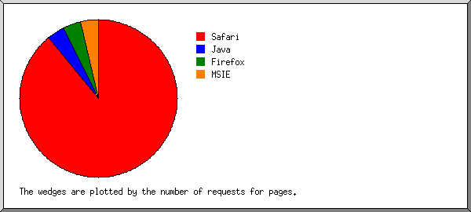
Listing browsers with at least 1 request for a page, sorted by the number of requests for pages.
| # | #reqs | #pages | browser |
|---|---|---|---|
| 1 | 2562 | 49 | Safari |
| 2562 | 49 | Safari/537 | |
| 2 | 21 | 2 | Java |
| 21 | 2 | Java/1 | |
| 3 | 1804 | 2 | Firefox |
| 687 | 2 | Firefox/55 | |
| 4 | 24 | 2 | MSIE |
| 24 | 2 | MSIE/7 | |
| 1249 | 0 | [not listed: 4 browsers] |
(Go To: Top | General Summary | Monthly Report | Daily Summary | Hourly Summary | Domain Report | Organization Report | Redirected Referrer Report | Failed Referrer Report | Referring Site Report | Browser Report | Browser Summary | Operating System Report | Status Code Report | File Size Report | File Type Report | Directory Report | Request Report)
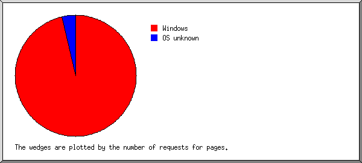
Listing operating systems, sorted by the number of requests for pages.
| # | #reqs | #pages | OS |
|---|---|---|---|
| 1 | 4349 | 53 | Windows |
| 4102 | 51 | Unknown Windows | |
| 24 | 2 | Windows XP | |
| 223 | 0 | Windows NT | |
| 2 | 82 | 2 | OS unknown |
| 3 | 1180 | 0 | Unix |
| 1180 | 0 | Linux | |
| 4 | 49 | 0 | Macintosh |
(Go To: Top | General Summary | Monthly Report | Daily Summary | Hourly Summary | Domain Report | Organization Report | Redirected Referrer Report | Failed Referrer Report | Referring Site Report | Browser Report | Browser Summary | Operating System Report | Status Code Report | File Size Report | File Type Report | Directory Report | Request Report)
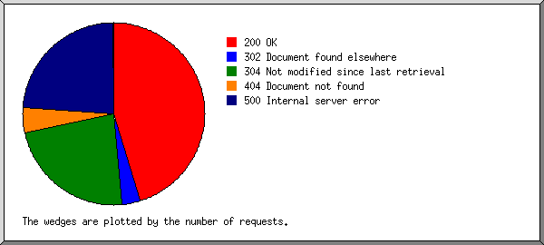
Listing status codes, sorted numerically.
| #reqs | status code |
|---|---|
| 3749 | 200 OK |
| 3 | 301 Document moved permanently |
| 276 | 302 Document found elsewhere |
| 1911 | 304 Not modified since last retrieval |
| 1 | 403 Access forbidden |
| 373 | 404 Document not found |
| 1986 | 500 Internal server error |
| 1 | 503 Service temporarily unavailable |
(Go To: Top | General Summary | Monthly Report | Daily Summary | Hourly Summary | Domain Report | Organization Report | Redirected Referrer Report | Failed Referrer Report | Referring Site Report | Browser Report | Browser Summary | Operating System Report | Status Code Report | File Size Report | File Type Report | Directory Report | Request Report)
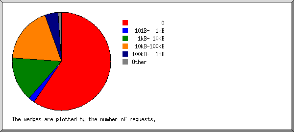
| size | #reqs | %bytes |
|---|---|---|
| 0 | 3355 | |
| 1B- 10B | 3 | |
| 11B- 100B | 52 | |
| 101B- 1kB | 121 | 0.03% |
| 1kB- 10kB | 828 | 3.17% |
| 10kB-100kB | 1046 | 25.97% |
| 100kB- 1MB | 250 | 39.45% |
| 1MB- 10MB | 4 | 18.67% |
| 10MB-100MB | 1 | 12.72% |
(Go To: Top | General Summary | Monthly Report | Daily Summary | Hourly Summary | Domain Report | Organization Report | Redirected Referrer Report | Failed Referrer Report | Referring Site Report | Browser Report | Browser Summary | Operating System Report | Status Code Report | File Size Report | File Type Report | Directory Report | Request Report)
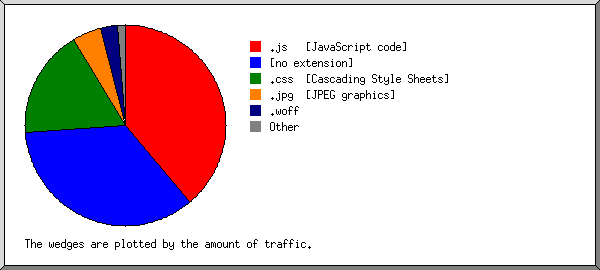
Listing extensions with at least 0.1% of the traffic, sorted by the amount of traffic.
| #reqs | %bytes | extension |
|---|---|---|
| 2171 | 38.75% | .js [JavaScript code] |
| 1626 | 34.99% | [no extension] |
| 1159 | 17.57% | .css [Cascading Style Sheets] |
| 245 | 4.68% | .jpg [JPEG graphics] |
| 67 | 2.78% | .woff |
| 44 | 0.87% | .php [PHP] |
| 94 | 0.28% | .png [PNG graphics] |
| 254 | 0.08% | [not listed: 5 extensions] |
(Go To: Top | General Summary | Monthly Report | Daily Summary | Hourly Summary | Domain Report | Organization Report | Redirected Referrer Report | Failed Referrer Report | Referring Site Report | Browser Report | Browser Summary | Operating System Report | Status Code Report | File Size Report | File Type Report | Directory Report | Request Report)
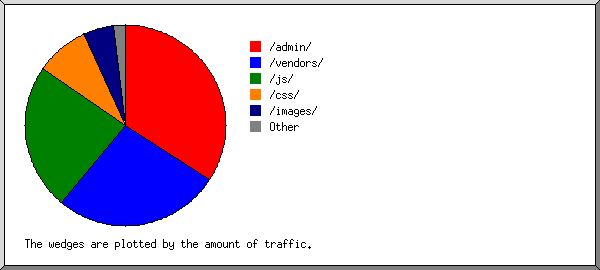
Listing directories with at least 0.01% of the traffic, sorted by the amount of traffic.
| #reqs | %bytes | directory |
|---|---|---|
| 1451 | 34.09% | /admin/ |
| 2203 | 26.83% | /vendors/ |
| 713 | 23.62% | /js/ |
| 482 | 8.71% | /css/ |
| 338 | 4.94% | /images/ |
| 278 | 0.88% | [root directory] |
| 159 | 0.53% | /auth/ |
| 3 | 0.34% | /index.php/ |
| 13 | 0.04% | /password/ |
| 6 | 0.01% | /img-sys/ |
| 14 | 0.01% | [not listed: 3 directories] |
(Go To: Top | General Summary | Monthly Report | Daily Summary | Hourly Summary | Domain Report | Organization Report | Redirected Referrer Report | Failed Referrer Report | Referring Site Report | Browser Report | Browser Summary | Operating System Report | Status Code Report | File Size Report | File Type Report | Directory Report | Request Report)
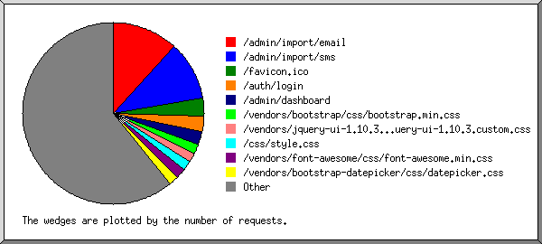
Listing files with at least 20 requests, sorted by the number of requests.
| #reqs | %bytes | last time | file |
|---|---|---|---|
| 667 | 31.49% | Oct/ 6/17 6:30 PM | /admin/import/email |
| 595 | Oct/ 6/17 4:15 PM | /admin/import/sms | |
| 187 | Oct/19/17 6:11 PM | /favicon.ico | |
| 156 | 0.52% | Oct/19/17 5:02 PM | /auth/login |
| 127 | 2.60% | Oct/19/17 5:01 PM | /admin/dashboard |
| 97 | 4.02% | Oct/19/17 4:22 PM | /vendors/bootstrap/css/bootstrap.min.css |
| 97 | 1.09% | Oct/19/17 4:22 PM | /vendors/jquery-ui-1.10.3.custom/css/ui-lightness/jquery-ui-1.10.3.custom.css |
| 97 | 1.85% | Oct/19/17 4:22 PM | /css/style.css |
| 97 | 0.65% | Oct/19/17 4:22 PM | /vendors/font-awesome/css/font-awesome.min.css |
| 97 | 0.55% | Oct/19/17 4:22 PM | /vendors/bootstrap-datepicker/css/datepicker.css |
| 97 | 0.47% | Oct/19/17 4:22 PM | /vendors/bootstrap-switch/css/bootstrap-switch.css |
| 96 | 3.72% | Oct/19/17 4:22 PM | /css/themes/grey.css |
| 96 | 0.32% | Oct/19/17 4:22 PM | /css/style-responsive.css |
| 96 | 2.06% | Oct/19/17 4:22 PM | /vendors/animate.css/animate.css |
| 96 | 0.01% | Oct/19/17 4:22 PM | /vendors/jquery-pace/pace.css |
| 96 | 1.15% | Oct/19/17 4:22 PM | /vendors/bootstrap/js/bootstrap.min.js |
| 96 | 0.53% | Oct/19/17 4:22 PM | /css/vendors.css |
| 96 | 2.20% | Oct/19/17 4:22 PM | /css/style-mango.css |
| 95 | 4.07% | Oct/19/17 4:22 PM | /js/jquery-1.9.1.js |
| 95 | 0.28% | Oct/19/17 4:22 PM | /js/jquery-migrate-1.2.1.min.js |
| 95 | 0.11% | Oct/19/17 4:22 PM | /vendors/jquery-cookie/jquery.cookie.js |
| 95 | 0.10% | Oct/19/17 4:22 PM | /js/html5shiv.js |
| 95 | 18.26% | Oct/19/17 4:22 PM | /js/jquery-ui.js |
| 95 | 0.17% | Oct/19/17 4:22 PM | /js/respond.min.js |
| 68 | 0.29% | Oct/19/17 4:22 PM | /images/login/logo_web88.jpg |
| 64 | 4.20% | Oct/19/17 4:22 PM | /images/login/bg.jpg |
| 61 | 2.70% | Oct/19/17 4:22 PM | /vendors/font-awesome/fonts/fontawesome-webfont.woff |
| 60 | 2.63% | Oct/19/17 4:22 PM | /vendors/font-awesome/fonts/fontawesome-webfont.woff?v=4.1.0 |
| 58 | 0.16% | Oct/19/17 4:22 PM | /js/index.js |
| 47 | 0.59% | Oct/19/17 4:22 PM | /vendors/bootstrap-timepicker/js/bootstrap-timepicker.js |
| 46 | 0.36% | Oct/19/17 4:22 PM | /vendors/bootstrap-clockface/js/clockface.js |
| 46 | 0.32% | Oct/19/17 4:22 PM | /vendors/bootstrap-colorpicker/js/bootstrap-colorpicker.js |
| 46 | 0.61% | Oct/19/17 4:22 PM | /vendors/bootstrap-datetimepicker/build/js/bootstrap-datetimepicker.min.js |
| 46 | 0.23% | Oct/19/17 4:22 PM | /vendors/bootstrap-switch/js/bootstrap-switch.min.js |
| 46 | 1.00% | Oct/19/17 4:22 PM | /vendors/bootstrap-datepicker/js/bootstrap-datepicker.js |
| 45 | 0.06% | Oct/19/17 4:22 PM | /js/form-components.js |
| 45 | 0.30% | Oct/19/17 4:22 PM | /vendors/slimScroll/jquery.slimscroll.js |
| 45 | 0.07% | Oct/19/17 4:22 PM | /vendors/flot-chart/jquery.flot.resize.js |
| 45 | 2.09% | Oct/19/17 4:22 PM | /vendors/flot-chart/jquery.flot.js |
| 45 | 0.07% | Oct/19/17 4:22 PM | /images/logo.jpg |
| 45 | 0.37% | Oct/19/17 4:22 PM | /vendors/skycons/skycons.js |
| 45 | 2.53% | Oct/19/17 4:22 PM | /vendors/jquery-jvectormap/jquery-jvectormap-world-mill-en.js |
| 45 | 0.35% | Oct/19/17 4:22 PM | /js/holder.js |
| 45 | 0.41% | Oct/19/17 4:22 PM | /vendors/jquery-news-ticker/jquery.news-ticker.js |
| 45 | 0.04% | Oct/19/17 4:22 PM | /vendors/jquery-animateNumber/jquery.animateNumber.min.js |
| 45 | 0.22% | Oct/19/17 4:22 PM | /vendors/jquery-maskedinput/jquery-maskedinput.js |
| 45 | 0.10% | Oct/19/17 4:22 PM | /vendors/flot-chart/jquery.flot.categories.js |
| 45 | 0.41% | Oct/19/17 4:22 PM | /vendors/jquery-knob/jquery.knob.js |
| 45 | 0.04% | Oct/19/17 4:22 PM | /js/jquery.menu.js |
| 45 | 0.11% | Oct/19/17 4:22 PM | /vendors/flot-chart/jquery.flot.spline.js |
| 45 | 0.23% | Oct/19/17 4:22 PM | /vendors/flot-chart/jquery.flot.tooltip.js |
| 45 | 0.12% | Oct/19/17 4:22 PM | /vendors/flot-chart/jquery.flot.fillbetween.js |
| 45 | 1.34% | Oct/19/17 4:22 PM | /vendors/moment/moment.js |
| 45 | 0.10% | Oct/19/17 4:22 PM | /images/logo_webqom.png |
| 45 | 0.05% | Oct/19/17 4:22 PM | /vendors/jquery-jvectormap/gdp-data.js |
| 45 | 0.06% | Oct/19/17 4:22 PM | /vendors/bootstrap-hover-dropdown/bootstrap-hover-dropdown.js |
| 45 | 0.02% | Oct/19/17 4:22 PM | /vendors/metisMenu/jquery.metisMenu.js |
| 45 | 0.55% | Oct/19/17 4:22 PM | /vendors/flot-chart/jquery.flot.pie.js |
| 45 | 0.17% | Oct/19/17 4:22 PM | /images/logo_web88.png |
| 45 | 0.30% | Oct/19/17 4:22 PM | /vendors/jquery-pace/pace.min.js |
| 45 | 0.12% | Oct/19/17 4:22 PM | /js/main.js |
| 45 | 0.12% | Oct/19/17 4:22 PM | /vendors/flot-chart/jquery.flot.stack.js |
| 45 | 0.60% | Oct/19/17 4:22 PM | /vendors/bootstrap-daterangepicker/daterangepicker.js |
| 45 | 0.71% | Oct/19/17 4:22 PM | /vendors/jquery-jvectormap/jquery-jvectormap-1.2.2.min.js |
| 43 | 0.01% | Oct/18/17 3:24 PM | / |
| 37 | 0.08% | Oct/18/17 8:13 PM | /images/profile/image_hock.jpg |
| 36 | Oct/ 6/17 12:00 PM | /admin/report/email | |
| 29 | 0.41% | Oct/ 6/17 8:42 PM | /adminer-4.3.1-mysql.php |
| 26 | Oct/ 6/17 12:00 PM | /admin/report/sms | |
| 20 | 0.01% | Oct/19/17 4:22 PM | /images/profile/1508328888.jpg |
| 80 | 1.14% | Oct/19/17 5:01 PM | [not listed: 28 files] |